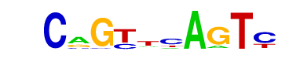
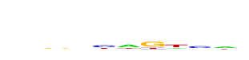

| p-value: | 1e-25 |
| log p-value: | -5.909e+01 |
| Information Content per bp: | 1.679 |
| Number of Target Sequences with motif | 570.0 |
| Percentage of Target Sequences with motif | 33.93% |
| Number of Background Sequences with motif | 10532.7 |
| Percentage of Background Sequences with motif | 22.59% |
| Average Position of motif in Targets | 54.0 +/- 21.7bp |
| Average Position of motif in Background | 50.4 +/- 34.2bp |
| Strand Bias (log2 ratio + to - strand density) | 0.9 |
| Multiplicity (# of sites on avg that occur together) | 1.20 |
| Motif File: | file (matrix) reverse opposite |
| Rank | Match Score | Redundant Motif | P-value | log P-value | % of Targets | % of Background | Motif file |
| 1 | 0.941 | 1e-20 | -46.151848 | 20.36% | 12.31% | motif file (matrix) | |
| 2 | 0.760 | 1e-19 | -45.327359 | 2.98% | 0.57% | motif file (matrix) | |
| 3 | 0.717 | 1e-14 | -32.462744 | 1.55% | 0.21% | motif file (matrix) | |
| 4 | 0.649 |  | 1e-12 | -28.481787 | 2.38% | 0.59% | motif file (matrix) |
| 5 | 0.620 | 1e-12 | -27.811307 | 8.51% | 4.50% | motif file (matrix) | |
| 6 | 0.668 | 1e-8 | -19.507134 | 16.13% | 11.38% | motif file (matrix) | |
| 7 | 0.749 |  | 1e-8 | -18.858644 | 19.11% | 14.05% | motif file (matrix) |
| 8 | 0.620 | 1e-2 | -4.726414 | 0.48% | 0.17% | motif file (matrix) |